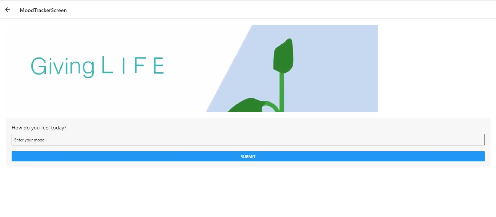
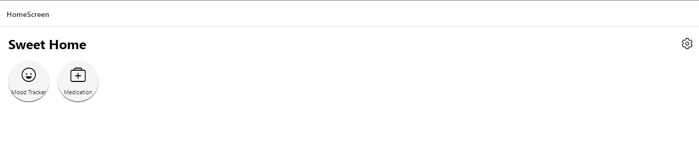
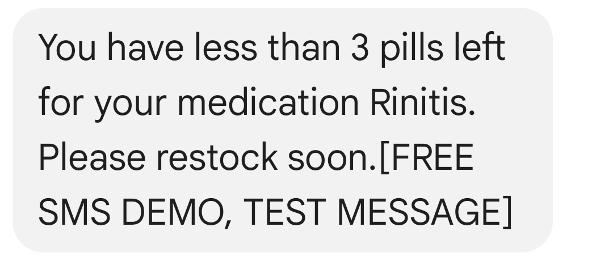
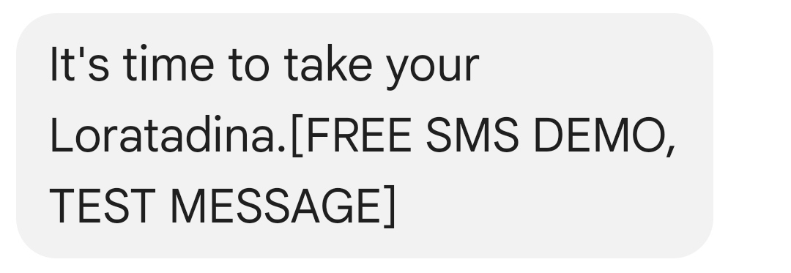

Mood Tracker
Depression affects 4.7% of Colombians, which is higher than the global average of 3.8%. This translates to about 2,425,000 people, highlighting a critical need for effective mental health interventions. Despite its prevalence, depression remains largely untreated in Colombia. The National Health Observatory reports that only 20% of adults with major depression receive specialized care, indicating an 80% treatment gap. Barriers such as stigma, lack of awareness, and limited access to timely medical services contribute to this issue. This app serves as a crucial tool for individuals recovering from depression post-hospitalization. It provides medication reminders, a platform to record and analyze emotional states with AI, and an emergency alert system that notifies pre-established contacts if the user is at risk. These functionalities address the urgent need for accessible and supportive mental health care in Colombia, helping individuals manage their condition more effectively.
Register Screen
The Register Screen is the initial step for users to create an account. It includes fields for email, password, and emergency contact information. Users must also authorize the handling of their data and consent to the app sending messages to their emergency contact in case of an emergency. The user information is securely stored using Firebase Authentication API, which ensures password security with advanced technologies. Additionally, the email and contact information are saved in a real-time database using Firebase. To enhance security, the password must meet the requirement of being more than six characters long.
Login Screen
The Login Screen allows users to access their accounts by entering the correct email and password. If the provided credentials do not match the stored information, access will be denied. This screen ensures that only authorized users can log into the app, maintaining the privacy and security of user data.
Webpage
The Webpage serves as the central hub where users can access all the functionalities of the app. It provides options to change passwords and update contact information. In the future, additional tools and features will be made available to enhance user experience and provide more comprehensive support for managing depression and related activities.
Change Settings
The Change Settings page allows users to update their password and contact information. This ensures that users can keep their details current and secure, maintaining the integrity of their emergency contact information and account security.
Mood Tracker
<The Mood Tracker page lets users record their current emotional state. This feature uses artificial intelligence to predict the user's sentiment, employing technologies such as Flask, the Transformers library, the sentiment_analysis_spanish library, and the AutoModelForSequenceClassification and AutoTokenizer from the Hugging Face ecosystem. Based on the recorded sentiment, the app presents either a funny or motivational video to improve the user's mood. If the sentiment is identified as depressed, a message is automatically sent to the emergency contact established during registration. These messages are handled using the Vonage API, ensuring timely and reliable communication in critical situations.
Reminder Medication
 The Reminder Medication page is designed to help users manage their medication schedule. Users can enter the medication name, dosage, and the interval at which they need to take it. The app then sets up a timer and sends reminders when it is time to take the medication. Additionally, if the user is running low on medication, the app sends a notification. These reminders and notifications are also managed through the Vonage API, providing a seamless and reliable reminder system.